Deltaprint – uživatelský manuál
Deltaprint je footprint a order-flow graf pro BTCUSDT perpetual na Binance Futures. Footprint, delta a všechny metriky se počítají z každého aggTrade, stejně pro historii i živou svíčku. Manuál projde obrazovku screen po screenu a vysvětlí, co přesně který prvek ukazuje a jak je spočítaný. Screeny jsou z ukázkových dat, proto v liště vidíte štítek „vzorová data“. V aplikaci uvidíte živý trh.
Rozhraní
Obrazovka má jednu hlavní plochu s footprintem a kolem ní lištu, osy, tabulku metrik, panel ΔOI a boční detail vybrané svíčky.

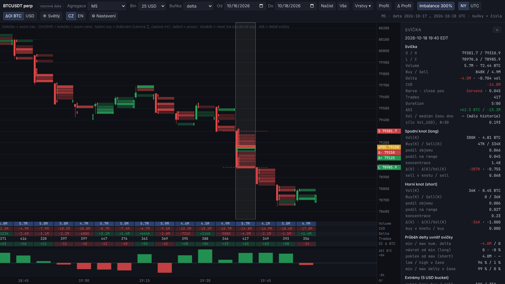
| Zóna | Co v ní je |
|---|---|
| Horní lišta | agregace, bin, režim buněk, období, vrstvy, profily, imbalance, časové pásmo, jednotky ΔOI, motiv, jazyk, nastavení. Vpravo stavový řádek: agregace, rozsah načtených dat a aktuální úroveň detailu (buňky + čísla / buňky / jen svíčky). |
| Šedý řádek nad grafem | zkrácená nápověda k ovládání. |
| Footprint | sloupec = svíčka, řádky = cenové úrovně v binu zobrazení. Tenká svíčka vlevo od buněk ukazuje OHLC. |
| Cenová osa | poslední cena a štítky vybrané svíčky: S a L jsou hranice horního a spodního knotu (max a min z O, C), vPOC úroveň s největším objemem, Δ− a Δ+ úrovně s nejzápornější a nejkladnější deltou. Stejné úrovně jsou ve footprintu orámované a hranice knotů vyznačené čárkovaně. |
| Tabulka pod grafem | Volume, CVD, Delta, Trades a změna OI pro každou svíčku. |
| Panel ΔOI | histogram změny open interestu. |
| Časová osa | čas v NY nebo UTC, vpravo dole právě zvolené pásmo. |
| Boční panel | rozbor vybrané svíčky, viz kapitola Detail svíčky. |
Vybraná svíčka je podbarvená šedým sloupcem. Křížek v bočním panelu panel schová, zpět ho otevřete tlačítkem Detail v liště.
Horní lišta

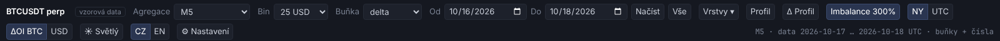
| Prvek | Co dělá |
|---|---|
| Agregace | typ svíček: M1, M5, M15, volume bary 100 M USD a 1 000 BTC, tick bary 5 000 aggTrades. „Vlastní práh…“ otevře pole pro vlastní hodnotu v USD, BTC nebo počtu obchodů (viz kapitola Agregace). |
| Bin | výška cenové úrovně ve footprintu: 5, 10, 25, 50 nebo 100 USD. Data jsou uložená po 5 USD a do většího binu se sčítají, takže změna binu je okamžitá. Na binu závisí i POC a imbalance. |
| Buňka | co buňky ukazují: delta, sell × buy, nebo volume. |
| Od, Do, Načíst | načte zvolené dny (v zobrazeném časovém pásmu) a celé je zobrazí. Enter v poli datumu funguje jako Načíst. |
| Vše | načte celou dostupnou historii. U jemných agregací může být rozsah příliš velký, aplikace pak ukáže výřez kolem středu a zbytek dočítá při posunu. |
| Vrstvy ▾ | sessions, dny, VWAP a profil viditelného rozsahu (viz kapitola Vrstvy). Tlačítko svítí, když je zapnutá aspoň jedna vrstva. |
| Profil, Δ Profil | volume a delta profil uvnitř každé svíčky. |
| Imbalance 300 % | zapíná zvýraznění imbalancí, číslo je nastavený poměr. |
| NY / UTC | časové pásmo os, hranic dnů a VWAP. NY sleduje letní čas. |
| ΔOI BTC / USD | jednotky změny open interestu v tabulce a panelu ΔOI. |
| ☀ Světlý / ☾ Tmavý, CZ / EN | motiv a jazyk. |
| ⚙ Nastavení | barvy, parametry imbalancí a rozložení panelů. |
Vlevo vedle symbolu je stav živých dat. Na screenu z živého provozu vypadá takto:

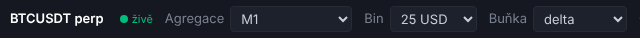
Po najetí myší ukáže, od kdy živá data navazují na historii a jaké je aktuální zpoždění. Význam všech stavů je v kapitole Živá data.
Ovládání grafu
| Akce | Myš | Dotyk |
|---|---|---|
| zoom času kolem kurzoru | kolečko | sevření / roztah dvěma prsty |
| zoom ceny | Ctrl, Shift nebo Alt + kolečko, případně kolečko nad cenovou osou | tažení cenové osy |
| posun | tažení grafu | tažení prstem |
| škálování ceny | tažení cenové osy nahoru nebo dolů | totéž |
| šířka svíček | tažení časové osy doleva nebo doprava | totéž |
| reset | dvojklik do grafu; dvojklik na ose resetuje jen tu osu | dvojité klepnutí |
| detail svíčky | klik na svíčku | klepnutí |
Svislý posun grafu vypne automatické měřítko ceny, dvojklik ho vrátí. Starší data se donačítají po kusech, když posunete graf doleva. Při živých datech se graf posouvá za poslední svíčkou.
Footprint
Každá buňka je jedna cenová úroveň v binu zobrazení. Buy = agresivní nákupy (taker buy, obchod na asku), sell = agresivní prodeje (taker sell, obchod na bidu), vše v USD notional. Sytost barvy se počítá vůči 95. percentilu právě viditelných buněk, hodnoty pod 12 % zůstávají bez výplně a jen se šedým číslem. Barva tedy ukazuje relativní význam úrovně v rámci obrazovky.
Režim delta

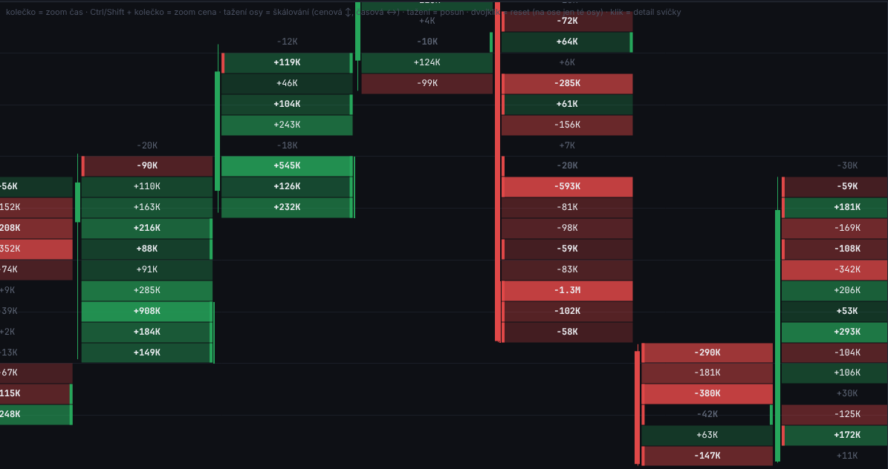
V buňce je buy − sell. Zelená = převaha agresivních nákupů, červená = prodejů. Na screenu je dobře vidět svíčka 19:05 s kladnou deltou skoro na všech úrovních a svíčka 19:20 s velkými zápornými úrovněmi (−1.3M, −593K) uvnitř těla.
Režim sell × buy

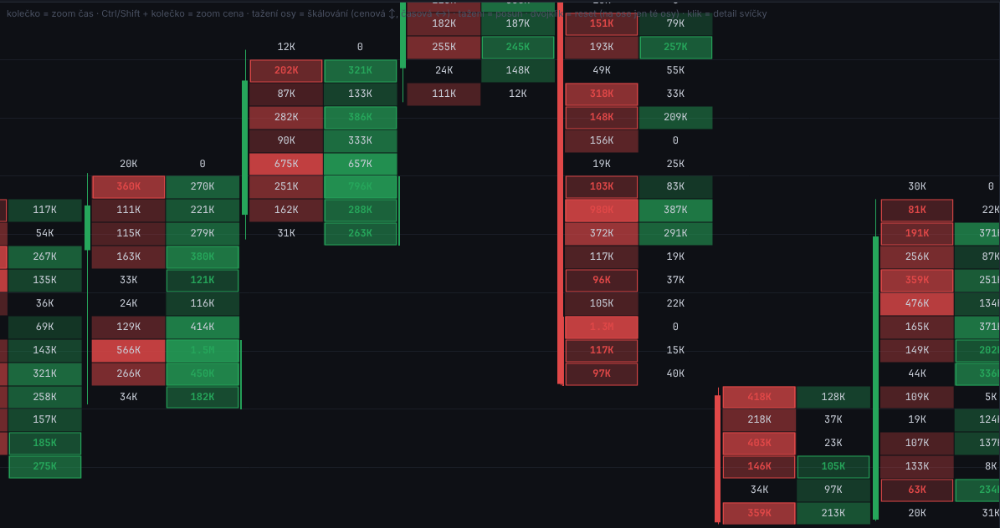
Levá polovina buňky je sell, pravá buy. Tohle je režim pro čtení diagonálních imbalancí a aukce na extrémech, protože vidíte obě strany zvlášť. Hodnota 0 na krajní úrovni znamená, že na extrému už nebyla protistrana.
Režim volume

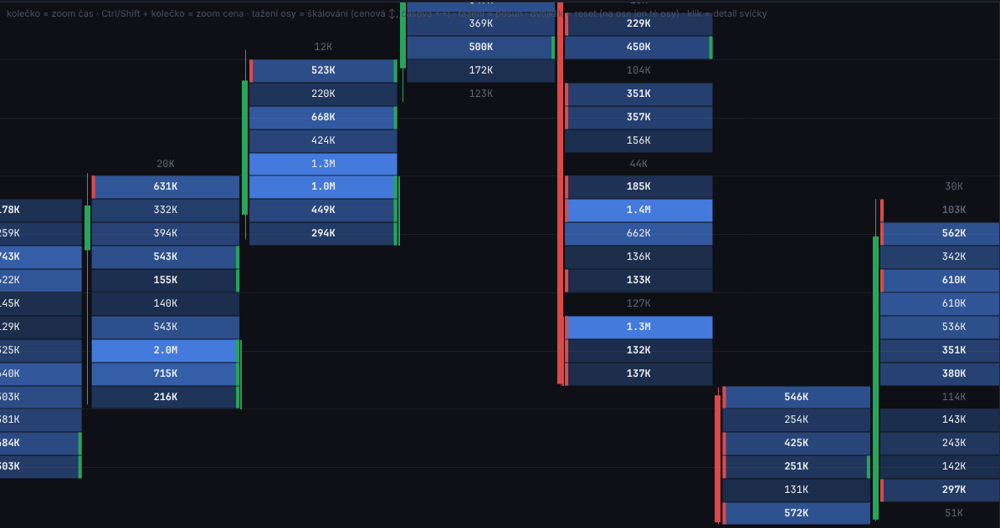
Celkový objem na úrovni (buy + sell), modrá škála. Hodí se pro hledání high a low volume nodů uvnitř svíček.
Imbalance
Imbalance se značí proužkem na okraji buňky:
- zelený proužek vpravo = buy imbalance: buy na úrovni L ≥ poměr × sell na úrovni L − bin,
- červený proužek vlevo = sell imbalance: sell na úrovni L ≥ poměr × buy na úrovni L + bin.
Agresivní strana musí mít na úrovni aspoň nastavené minimum (výchozí 50 000 USD), aby slabé úrovně nedávaly falešné signály. Stacked imbalance = aspoň 3 imbalance stejné strany za sebou. Poměr, minimum i délku stacku změníte v Nastavení. Imbalance se počítá v binu zobrazení, takže při binu 10 a 50 USD může vyjít jinak.
Úrovně detailu
Podle zoomu aplikace přepíná buňky s čísly, jen barevné buňky a jen svíčky. Aktuální stav je napsaný vpravo ve stavovém řádku. Když čísla nevidíte, přibližte čas, cenu, nebo zvolte větší bin.
Kříž a tooltip

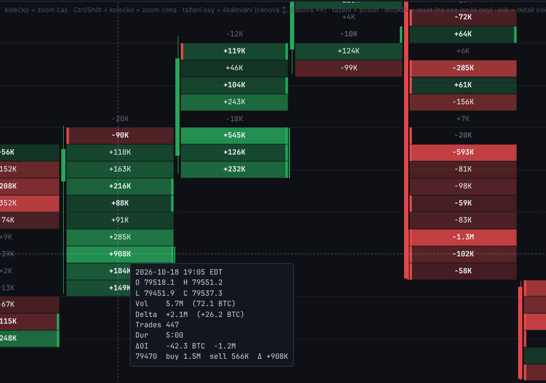
Při pohybu myši graf ukazuje kříž s cenou kurzoru na cenové ose a tooltip svíčky pod kurzorem:
| Řádek | Význam |
|---|---|
| 2026-10-18 19:05 EDT | čas otevření svíčky ve zvoleném pásmu |
| O, H, L, C | open, high, low, close |
| Vol | objem v USD a v BTC |
| Delta | delta svíčky v USD a v BTC |
| Trades | počet aggTrades |
| Dur | délka svíčky (u volume a tick barů se liší svíčka od svíčky) |
| ΔOI | změna open interestu za svíčku v BTC a USD |
| poslední řádek | úroveň pod kurzorem: cena, buy, sell a její delta |
Na screenu je úroveň 79 470 s buy 1.5M proti sell 566K, tedy delta +908K, nejsilnější úroveň celé svíčky.
Profil a Δ Profil svíčky

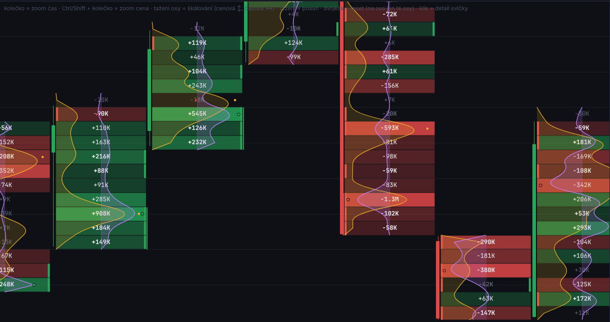
- Profil (žlutá křivka, ve světlém režimu tmavě oranžová): rozložení objemu po úrovních svíčky, normované na její nejsilnější úroveň. Tečka označuje vPOC. Na první pohled je vidět, jestli se obchodovalo hlavně v těle, nebo v knotu.
- Δ Profil (fialová křivka): delta kolem svislé nulové osy uprostřed buňky, doprava nákupy, doleva prodeje. Zelená tečka = úroveň s nejkladnější deltou (Δ+), červená = s nejzápornější (Δ−).
Oba profily jdou zapnout nezávisle, fungují ve všech režimech buněk a počítají se v binu zobrazení. Zobrazí se, jen když jsou vidět buňky.
Vrstvy
Tlačítko Vrstvy ▾ otevře nabídku s kontextem nad jednotlivé svíčky. Každou vrstvu zapínáte zvlášť a prohlížeč si volbu pamatuje.

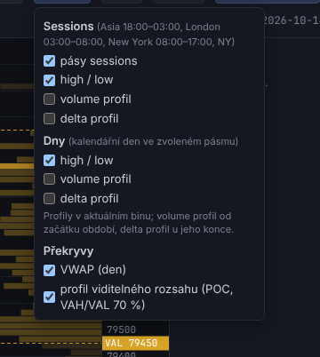

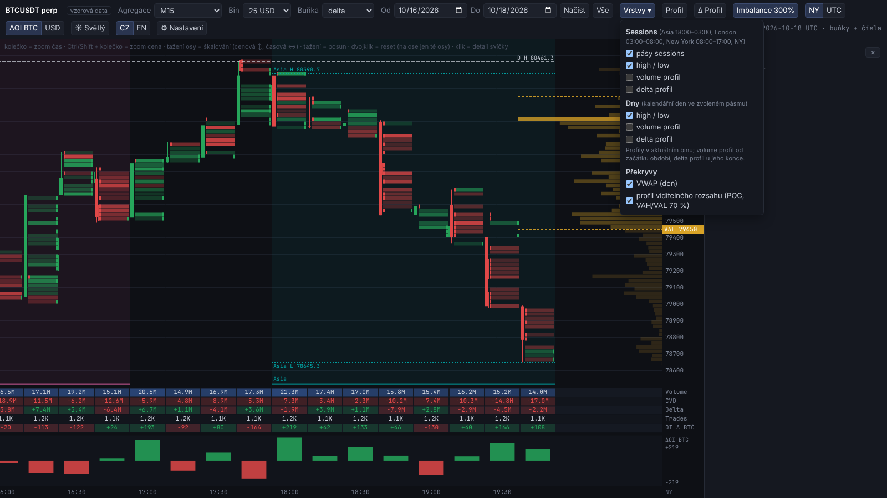
| Vrstva | Co ukazuje |
|---|---|
| Sessions: pásy | podbarvení času session s názvem u spodního okraje. Asia 18:00–03:00, London 03:00–08:00, New York 08:00–17:00, vše čas NY včetně letního času. Session přes půlnoc patří dni, ve kterém končí. |
| Sessions: high / low | tečkované čáry přes celou session s popiskem session, H nebo L a ceny. |
| Sessions: volume / delta profil | volume profil ukotvený na začátek session (POC zvýrazněný), delta profil s nulovou osou u jejího konce, nákupy doprava zeleně, prodeje doleva červeně. |
| Dny: high / low, volume / delta profil | totéž pro kalendářní den ve zvoleném pásmu (NY nebo UTC). |
| VWAP (den) | objemem vážená průměrná cena od začátku dne, čárkovaná čára. |
| Profil viditelného rozsahu | volume profil právě zobrazeného výřezu u pravého okraje grafu, s POC a value area 70 % (VAH a VAL se štítky na cenové ose). Přepočítá se při každém posunu a zoomu. |
Profily sessions a dnů mají šířku úměrnou délce období a při velkém oddálení se skryjí. Vrstvy fungují nad všemi agregacemi včetně volume a tick barů.
Detail svíčky
Klik na svíčku otevře v bočním panelu její kompletní rozbor. Všechny hodnoty se počítají z jednotlivých aggTrades, ne z buněk footprintu, takže nezávisí na zvoleném binu (kromě extrémů, které mají pevný bucket 5 USD). Knot je část svíčky striktně pod min(O, C) (spodní, long strana) nebo nad max(O, C) (horní, short strana). Označení (K) znamená „v knotu“.

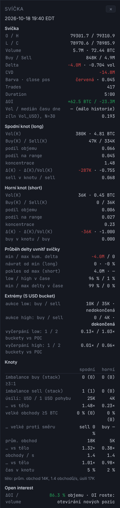
Svíčka
| Řádek | Význam |
|---|---|
| O / H, L / C | OHLC |
| Volume | objem v USD notional a v BTC |
| Buy / Sell | agresivní nákupy a prodeje v USD |
| Delta | buy − sell v USD a delta / volume (−1 až +1) |
| CVD | kumulativní delta, denně se nuluje v 00:00 UTC |
| Barva · close pos | barva svíčky a pozice close v range: (C − L) / (H − L), 0 = close na low, 1 = na high |
| Trades, Duration | počet aggTrades a délka svíčky |
| ΔOI | změna open interestu mezi 5min snapshoty Binance (BTC / USD). Kde svíčka neobsahuje hranici snapshotu, je prázdná. |
| Vol / medián času dne | objem vůči mediánu objemu ve stejném čase NY za posledních 20 dní. Odliší výjimečný objem od běžného otevření session. |
| z(ln Vol_USD), N=30 | z-score logaritmu objemu vůči 30 předchozím svíčkám. U volume barů místo toho z rychlosti, jakou objem přichází. |
Spodní knot (long) a Horní knot (short)
| Řádek | Význam |
|---|---|
| Vol(K) | objem v knotu v USD a BTC |
| Buy(K) / Sell(K) | agresivní nákupy a prodeje v knotu |
| podíl objemu | jaká část objemu svíčky proběhla v knotu |
| podíl na range | délka knotu / range svíčky |
| koncentrace | podíl objemu / podíl na range. Nad 1 se v knotu obchodovalo hustěji než v průměru svíčky. |
| Δ(K) · Δ(K)/Vol(K) | delta v knotu a její poměr k objemu knotu |
| sell v knotu / sell (buy v knotu / buy) | jaká část všech agresivních prodejů (nákupů) svíčky proběhla v knotu |
Typická absorpce na low: vysoké z, velký podíl objemu a koncentrace nad 1 ve spodním knotu, záporné Δ(K) a vysoký podíl sell v knotu, close pos blízko 1.
Průběh delty uvnitř svíčky
| Řádek | Význam |
|---|---|
| min / max kum. delta | nejnižší a nejvyšší hodnota kumulativní delty během svíčky |
| návrat od min (long) | o kolik se delta vrátila od minima do close, v USD a v procentech minima |
| pokles od max (short) | zrcadlově od maxima |
| low / high v čase | kdy během svíčky vzniklo low a high (0 % = na otevření, 100 % = na close) |
| min / max delty v čase | kdy vzniklo minimum a maximum delty |
Když minimum delty vznikne ve stejné chvíli jako low a delta se pak vrátí, prodejci tlačili do low a byli absorbováni. Poměr návratu se skryje, je-li extrém delty menší než 1 % objemu svíčky.
Extrémy (5 USD bucket)
| Řádek | Význam |
|---|---|
| aukce low: buy / sell | objem nákupů a prodejů v nejnižším 5USD bucketu. Obě strany nenulové = nedokončená aukce (trh má tendenci se k extrému vrátit), jedna strana nulová = dokončená. |
| aukce high: buy / sell | totéž pro nejvyšší bucket |
| vyčerpání low / high: 1 / 2 buckety vs POC | objem krajního bucketu (a dvou krajních) jako násobek objemu POC bucketu. Malé číslo (např. 0.01×) = na extrému už skoro nikdo neobchodoval, tlak se vyčerpal. |
Knoty (spodní / horní)
| Řádek | Význam |
|---|---|
| imbalance buy / sell (stack) ≥ 3:1 | počet imbalancí v knotu, v závorce nejdelší stack |
| úsilí: USD / 1 USD pohybu | kolik USD se zobchodovalo na 1 USD pohybu ceny v knotu (effort vs. result). „… vs tělo“ = násobek úsilí v těle. Velké úsilí s malým pohybem = někdo stojí proti. |
| velké obchody ≥ 5 BTC | podíl objemu knotu z velkých aggTrades, v závorce jejich počet |
| … velké proti směru | podíl velkých prodejů ve spodním knotu, velkých nákupů v horním |
| prům. obchod, obchody / s | průměrná velikost obchodu a tempo obchodování v knotu, „… vs tělo“ vůči tělu svíčky |
| čas v knotu | jakou část trvání svíčky byla cena v knotu |
Pod tabulkou je pro srovnání řádek těla: průměrný obchod, obchody za sekundu a úsilí.
Open interest
ΔOI / volume ukazuje změnu open interestu jako procento objemu svíčky. Klesající OI = zavírání pozic nebo likvidace, rostoucí = otevírání nových pozic.
Hodnota „málo historie“ znamená, že metrika potřebuje delší historii (z-score 30 svíček, objem vůči času dne 20 dní). U dnešních živých svíček doplní z-score, objem vůči času dne a ΔOI až denní aktualizace.
Tabulka pod grafem a panel ΔOI
Pod footprintem běží tabulka statistik zarovnaná se svíčkami a pod ní histogram změny open interestu. Obojí se posouvá a zoomuje spolu s grafem, takže každý sloupec patří svíčce nad ním.

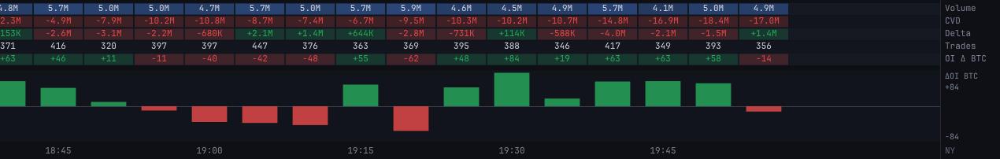
| Řádek | Co ukazuje |
|---|---|
| Volume | objem svíčky v USD. Sytost modré roste s objemem, nadprůměrné svíčky vyniknou na první pohled. |
| CVD | kumulativní delta od 00:00 UTC. Zelená = kladná, červená = záporná. Divergence CVD proti ceně (nové low bez nového minima CVD) je klasický signál vyčerpání. |
| Delta | buy − sell svíčky |
| Trades | počet aggTrades. Hodně obchodů při malém objemu = retail, málo obchodů s velkým objemem = velcí hráči. |
| OI Δ | změna open interestu za svíčku v BTC nebo USD (přepíná se v liště) |
Panel ΔOI kreslí totéž jako sloupce: zelený = OI roste, nové pozice se otevírají; červený = OI klesá, pozice se zavírají nebo likvidují. Popisky vpravo ukazují rozsah osy. Čtení v kombinaci s cenou a deltou:
| Cena | ΔOI | Typický výklad |
|---|---|---|
| roste | roste | nové longy, trend má palivo |
| roste | klesá | short squeeze nebo vybrání zisků, slabší pohyb |
| klesá | roste | nové shorty |
| klesá | klesá | likvidace longů, často kapitulační low |
OI přichází z Binance v 5min snapshotech, takže na M1 nebo u krátkých range barů mají hodnotu jen svíčky obsahují hranici snapshotu. Tabulku i panel lze vypnout v Nastavení → Rozložení.
Agregace
Agregace určuje, kdy se zavře svíčka. Vybírá se v liště, data se přepočítají z jednotlivých obchodů, takže každá varianta je přesná, ne odvozená z jiného timeframu.
| Typ | Volby | Kdy použít |
|---|---|---|
| Časová | M1, M5, M15 | klasický pohled, srovnání se session a s jinými platformami |
| Objemová (USD) | 100M USD | každá svíčka má stejný notional. V rychlém trhu vzniká hodně svíček, v klidu málo. Odfiltruje šum mrtvých hodin. |
| Objemová (BTC) | 1 000 BTC | totéž v BTC, nezávislé na ceně |
| Ticková | 5 000 ticků | svíčka po 5 000 aggTrades. Reaguje na aktivitu, ne na velikost obchodů. |
| Vlastní práh | libovolná hodnota v USD, BTC nebo tickách | vlastní velikost range barů. Práh se spočítá nad celou historií a uloží, první výpočet chvíli trvá (průběh vidíte v liště). |
U objemových a tickových svíček mají všechny svíčky srovnatelnou váhu, takže se lépe porovnává delta a imbalance mezi nimi. Trvání svíčky (Duration v detailu) pak samo o sobě říká, jak rychle trh obchoduje. Z-score v detailu se u nich počítá z rychlosti přítoku objemu místo ze samotného objemu.
Pro příliš dlouhý rozsah Od–Do na jemné agregaci aplikace zobrazí výsek kolem středu a další data dočte při posunu grafu.
Nastavení, světlý režim a mobil
Tlačítko Nastavení v liště otevře panel s barvami, prahy imbalancí a rozložením. Všechno se ukládá v prohlížeči, při příští návštěvě najdete graf tak, jak jste ho opustili.

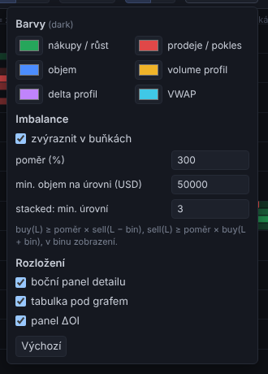
| Skupina | Položka | Význam |
|---|---|---|
| Barvy | buy, sell, imbalance, pozadí… | vlastní barvy buněk a zvýraznění |
| Imbalance | poměr (300 %) | buy na úrovni musí být aspoň 3× větší než sell o bin níž (a zrcadlově), aby buňka byla imbalance |
| Imbalance | minimum (50 000 USD) | menší objemy se ignorují, aby třeba 3 USD proti 1 USD nebyly imbalance |
| Imbalance | stacked (3) | kolik imbalancí za sebou se označí jako stack |
| Rozložení | boční panel, tabulka, panel ΔOI | zapnutí a vypnutí jednotlivých částí obrazovky. Vypnutím získáte víc místa pro graf. |
| Výchozí | vrátí všechno na výchozí hodnoty |
Pokud obchodujete agresivnější setupy, snižte poměr na 200–250 %, uvidíte víc imbalancí. Pro čistší graf v rušné NY session zvyšte minimum.
Světlý režim
Přepínač ☀ / ☾ v liště mezi tmavým a světlým režimem. Barvy buněk i vrstev se přizpůsobí, význam zůstává stejný.

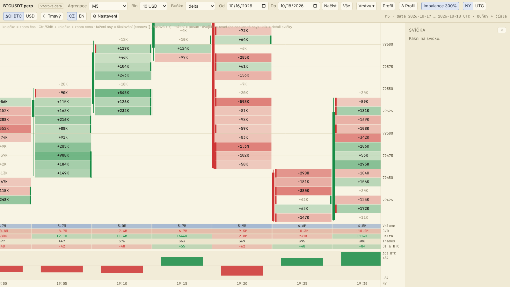
Mobil a tablet
Na úzké obrazovce zůstane v liště jen symbol, agregace a bin, ostatní ovládání (vrstvy, nastavení, režim buněk, rozsah) schová tlačítko ☰. Graf se posouvá tahem prstu a čas se zoomuje dvěma prsty. Klepnutí na svíčku vysune detail zprava přes graf. Tabulka a panel ΔOI zůstávají pod grafem.

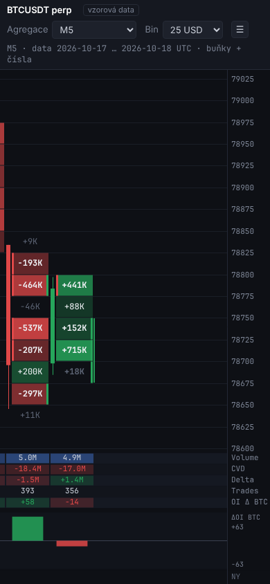
Živá data a časté otázky
Data přicházejí živě z veřejného WebSocketu Binance (BTCUSDT perpetual), poslední svíčka se dopočítává s každým obchodem. Stav ukazuje štítek vpravo v liště, po najetí myší uvidíte, odkud živá data běží a jaké je zpoždění.
| Štítek | Význam |
|---|---|
| živě | připojeno, svíčky se aktualizují v reálném čase |
| doplňuji | po výpadku spojení se dohrávají chybějící obchody, nic se neztratí |
| připojuji / startuji | spojení se navazuje |
| vzorová data | zobrazená jsou syntetická data, ne skutečný trh |
Historie se jednou denně (09:30 UTC) srovná s oficiálními denními soubory Binance. Teprve pak mají dnešní svíčky dopočítané ΔOI, z-score a objem vůči času dne.
Časté otázky
Proč se čísla liší od jiné platformy? Delta se počítá z příznaku agresora v každém aggTrade Binance futures, ne z odhadu podle tick rule. Jiné platformy často agregují víc burz nebo spot, nebo používají jinou hranici dne pro CVD (zde 00:00 UTC).
Proč některé buňky nemají čísla? Graf je oddálený. Přibližte čas (kolečko) nebo cenu (Ctrl + kolečko), případně zvětšete bin.
Proč je ΔOI prázdné? Svíčka neobsahuje hranici 5min snapshotu OI, nebo jde o dnešní data před denní aktualizací.
V jakém čase jsou osy? Časová osa a session jsou v čase New Yorku (EDT/EST, s letním časem), denní hranice CVD v UTC.
Kde se nastavení ukládá? V prohlížeči. Na jiném zařízení nebo v anonymním okně začínáte s výchozím nastavením.
Je to investiční doporučení? Ne. Deltaprint je analytický nástroj, rozhodnutí o obchodu je na vás.